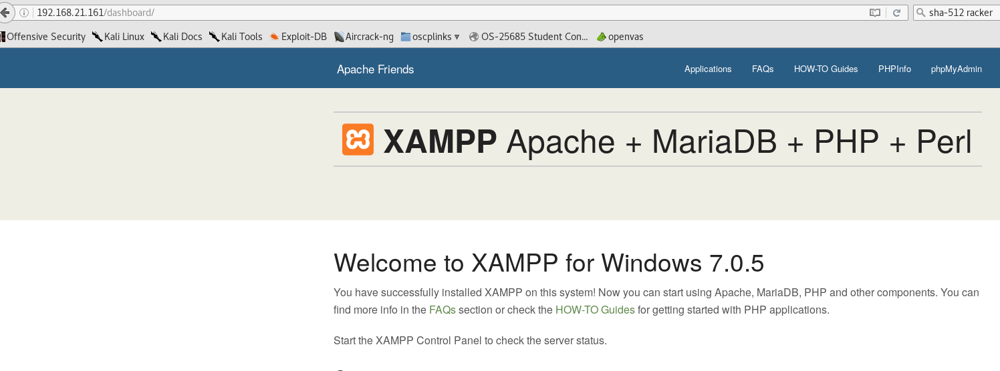

http://192.168.21.161/server-info
Server Settings
Server Version: Apache/2.4.18 (Win32) OpenSSL/1.0.2e PHP/7.0.5
Apache Lounge VC14 Server built: Dec 9 2015 10:17:39
Server loaded APR Version: 1.5.2
Compiled with APR Version: 1.5.2
Server loaded APU Version: 1.5.4
Compiled with APU Version: 1.5.4
Module Magic Number: 20120211:52
Hostname/port: 192.168.21.161:80
Timeouts: connection: 300 keep-alive: 5
MPM Name: WinNT
MPM Information: Max Daemons: 64 Threaded: yes Forked: no
Server Architecture: 32-bit
Server Root: C:/xampp/apache
Config File: C:/xampp/apache/conf/httpd.conf
Server Built With:
-D APR_HAS_SENDFILE
-D APR_HAS_MMAP
-D APR_HAVE_IPV6 (IPv4-mapped addresses disabled)
-D APR_HAS_OTHER_CHILD
-D AP_HAVE_RELIABLE_PIPED_LOGS
-D HTTPD_ROOT="/apache"
-D SUEXEC_BIN="/apache/bin/suexec"
-D DEFAULT_PIDLOG="logs/httpd.pid"
-D DEFAULT_SCOREBOARD="logs/apache_runtime_status"
-D DEFAULT_ERRORLOG="logs/error.log"
-D AP_TYPES_CONFIG_FILE="conf/mime.types"
-D SERVER_CONFIG_FILE="conf/httpd.conf"
root@kali:~/gen# smbclient //192.168.21.161/c$ -U installer2
WARNING: The "syslog" option is deprecated
Enter installer2's password:
Domain=[THEMACHINE] OS=[Windows 7 Professional N 7601 Service Pack 1] Server=[Windows 7 Professional N 6.1]
tree connect failed: NT_STATUS_ACCESS_DENIED
root@kali:~/gen#